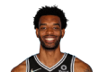
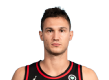
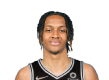
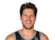
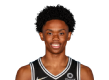
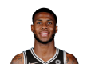
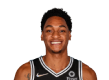
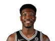
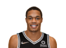

Draft
MVP
Draft
MVP

O San Antonio Spurs foi criado em 1967, mas não com esse nome, tampouco como uma franquia da NBA. A equipe nasceu em Dallas, como o Dallas Chaparrals, e disputava a American Basketball Association (ABA).
O nome do time chegou a ser alterado para Texas Chaparrals, mas, em 1973, após a mudança para San Antonio, a franquia foi rebatizada como San Antonio Spurs. A chegada à NBA aconteceu em 1976, com a fusão entre ABA e NBA.
A fusão levou San Antonio Spurs, Brooklyn Nets (então New York Nets), Indiana Pacers e Denver Nuggets para a mais importante liga do basquete mundial.
A origem do nome Spurs é controversa. Há quem diga ser uma homenagem às esporas (Spurs) usadas pelos cowboys do Texas, enquanto outros apontam uma homenagem a Red McCombs, seu proprietário inicial, que nasceu na cidade de Spur.
O San Antonio Spurs representa a cidade de San Antonio, no estado do Texas. A cidade tem cerca de 1,5 milhão de habitantes, com 2,1 milhão de pessoas quando é considerada toda a área de sua região metropolitana. Assim, San Antonio é a segunda cidade mais populosa do Texas.
O San Antonio Spurs disputa suas partidas em casa na NBA no AT&T Center. Entre 2003 e 2017, a arena recebeu também os jogos do San Antonio Silver Stars, equipe da WNBA.
| Keita Bates-Diop  | Malaki Branham

|
Zach Collins | Danilo Gallinari  | Tre Jones | Romeo Langford  | Doug McDermott  | Jakob Poeltl | Joshua Primo  | Josh Richardson | Jeremy Sochan
|
D.J. Stewart Jr.  | Devin Vassell  | Devontar Cacok  | Blake Wesley
|
Joe Wieskamp | Robert Woodard II  |